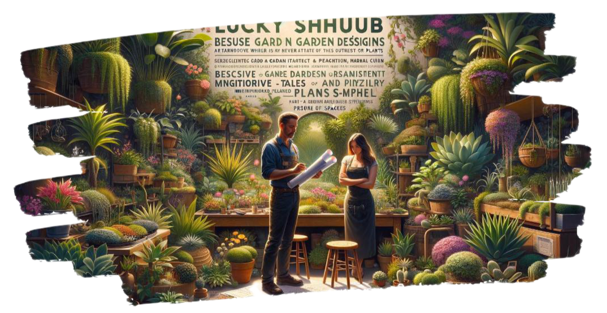

Green Your Scene with Lucky Shrub – Where Every Space Flourishes
Nestled in the heart of Tucson, Arizona, Lucky Shrub emerges as more than just a garden design firm; it's the embodiment of a green dream cultivated by the passionate duo, Jason and Maria. This medium-sized oasis is dedicated to transforming any area into a verdant paradise you'll be eager to boast about. Lucky Shrub's roots run deep in the realms of bespoke garden design, meticulous maintenance, and imaginative landscaping, making it the quintessential haven for those looking to infuse life into their spaces. At Lucky Shrub, we believe that every nook deserves its own narrative, a story told through the lush whispers of leaves and the vibrant tales of petals. That's why our small but vibrant plant nursery offers an extensive selection of indoor and outdoor plants, ensuring you find your leafy or blooming counterparts to accentuate your personal or professional landscapes. Under the creative and expert guidance of Jason, our garden architect, your visions are meticulously crafted into reality. His hands-on approach and innovative designs, coupled with a team of skilled landscapers, ensure that every project is a masterpiece of greenery. Meanwhile, Maria, with her keen eye for marketing and nurturing touch, oversees the nursery, ensuring that only the finest specimens make their way to your gardens. At Lucky Shrub, we're more than a company; we're a community bound by the love for plants. We invite you to join us on this verdant journey, to explore the endless possibilities that plants and expert design can bring to your space. Let us help you green your scene, making every day an opportunity to live in an oasis of your own making – a place you're proud to call yours.
